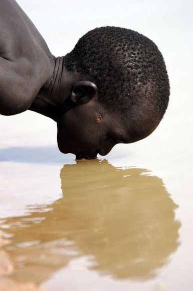
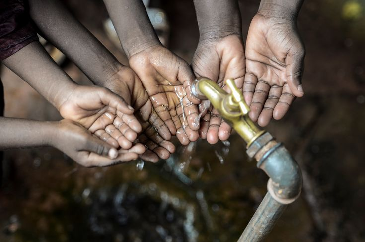

Overview
Water covers 71% of the Earth's surface. Yet 2.2 billion people more than one in four humans alive today do not have access to safely managed drinking water. This is not a natural scarcity problem. It is a distribution, infrastructure, and political will problem. The water exists. The systems to deliver it safely do not reach everyone.
United Nations Sustainable Development Goal 6 calls for universal access to safe and affordable drinking water and sanitation by 2030. As of 2026, the world is significantly off track. Sub-Saharan Africa carries the heaviest burden home to more than half of all people living without basic water access globally.

Who Is Affected
The water crisis is not evenly distributed. It is concentrated in specific geographies, and within those, it falls hardest on the poorest, most rural, and most marginalised communities.
In Somalia, decades of conflict have destroyed whatever water infrastructure once existed. In Chad, drought and desertification are shrinking water sources faster than they can be replaced. In Ethiopia, millions rely on rivers and ponds shared with livestock, with no treatment whatsoever.


Root Causes
Climate Change
The Sahel region which includes Chad, northern Nigeria, and parts of Somalia and Ethiopia is warming at 1.5 times the global average rate. Rainfall is becoming more erratic. Droughts that once occurred once a decade now strike multiple times within a decade. Seasonal rivers no longer flow year-round. Glaciers in the Ethiopian highlands, which feed major rivers, are retreating.
Conflict and Governance
Water infrastructure requires stable governance to build and maintain. In conflict zones, pipelines are destroyed, pumping stations are abandoned, and technical staff flee. Somalia has had no functioning central government for much of the past three decades. Even in relatively stable countries like Ethiopia, corruption and mismanagement divert infrastructure funding away from rural areas.
Population Pressure
Sub-Saharan Africa has the fastest-growing population on Earth. Aquifers and rivers that were adequate for communities of a few thousand are being stretched to serve tens of thousands. Urban migration is creating vast informal settlements places that no water utility was designed to serve, where residents pay up to 10 times more for water from vendors than wealthier citizens pay through pipes.
"In Ndjamena, Chad, a family in an informal settlement may spend 20% of their income on water that is still not reliably safe to drink. A kilometre away, wealthier residents pay almost nothing for tap water."
Health Consequences
The health consequences of contaminated water are enormous and measurable. Diarrhoeal disease almost entirely preventable with clean water and sanitation kills approximately 485,000 people per year globally. The majority are children under five. Cholera, typhoid, hepatitis A, and Guinea worm disease remain endemic in parts of Sub-Saharan Africa.
Sanitation compounds the water crisis. Without toilets and sewage systems, human waste enters waterways. People upstream defecate into rivers that people downstream drink from. Sanitation investment must accompany water investment for either to work.

Gender & Water
The burden of water collection falls overwhelmingly on women and girls. In Sub-Saharan Africa, women collect water in 76% of households without on-premises access. The average round trip to collect water is 30 minutes but in arid regions like northern Chad or southern Ethiopia, it can be 4 to 6 hours.
Those hours are not neutral. They are hours not spent in school. Not spent in paid employment. Not spent on rest or personal development. The water crisis is therefore inseparable from gender inequality it is one of the most concrete mechanisms through which structural poverty is reproduced across generations.

What Needs to Change
The water crisis is solvable. Not easily, and not quickly but the technology, the knowledge, and most of the funding required already exist. What is missing is sustained political commitment and the pressure of an informed public demanding it.
Infrastructure Investment
Boreholes, piped systems, rainwater harvesting, and solar-powered pumps are all proven technologies. The Global Water Initiative estimates that ending the water crisis requires roughly $114 billion per year in additional investment less than 0.1% of global GDP.
Sanitation Must Come With Water
SDG 6 covers both water and sanitation for a reason. Providing clean water without also providing safe waste disposal simply moves the contamination problem. Both must be addressed together.
What You Can Do
You are a student at a university in a country with reliable water access. Your direct impact on water infrastructure in Chad is limited but your indirect impact, through political engagement, fundraising, and awareness, is real. Organisations like WaterAid, charity: water, and UNICEF's WASH programmes have demonstrated that clean water access can be delivered for as little as £20-£30 per person served.